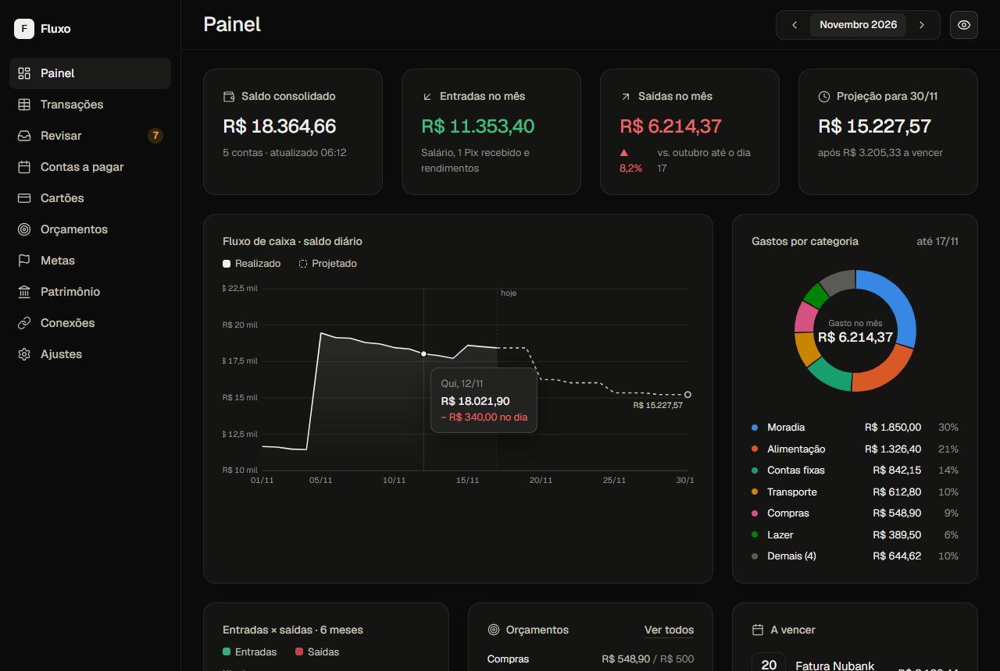

Apogeu
Site pessoal de finanças conectado ao Open Finance: importa as transações dos bancos, categoriza sozinho e mostra para onde o dinheiro vai e o que ainda vai vencer.

O que ele faz
- Painel: saldo, entradas e saídas do mês, fluxo de caixa com projeção e gastos por categoria.
- Transações: todas as contas e cartões numa tabela, com busca, filtros e divisão de compras.
- Categorização que aprende: regras e semelhança de texto; o que não tem certeza vai para a fila Revisar.
- Contas a pagar, cartões, orçamentos e metas.